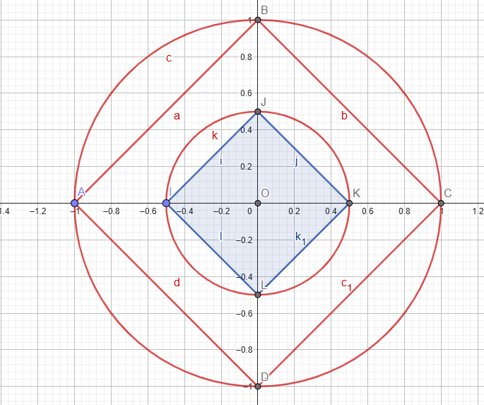

On tourne en rond dans un cercle !!! | Partie 1
Rédigé 29/05/2025
Introduction...
Mon objectif est simple: prouver la proportionnalité du cercle en oubliant toutes mes connaissances sur le cercle...

On voit que \( AD = \sqrt{AO^2 + OD^2} \), donc
\( AD = \sqrt{2 \cdot (r_c \cdot)^2} = r_c \cdot \sqrt{2} \)
On voit que \( IL = \sqrt{IO^2 + OL^2} \), donc
\( IL = \sqrt{2 \cdot (r_k \cdot)^2} = r_k \cdot \sqrt{2} \)
On a :
\[
\frac{r_k}{r_a} = \frac{\sqrt{2} \cdot P_k}{\sqrt{2} \cdot P_a} = \frac{P_k}{P_a}
\Rightarrow P_a = \frac{r_a \cdot P_k}{r_k}
\]
Si on généralise, on a :
\[
P = \frac{r \cdot P_n}{r_n}
\Rightarrow \frac{P}{r} = \frac{P_n}{r_n}
\]
Donc \(\frac{P}{r}\) est une constante.
La constante \( \frac{P}{D} \) est notée \( \pi \) !
Logiquement, si \( \frac{P}{r} \) est une constante, alors \( \frac{P}{D} \) l'est aussi,
car on a :
\[
\frac{P}{r} = \frac{P}{\frac{D}{2}} = \frac{2P}{D}
\Rightarrow \frac{P}{D} = \frac{1}{2} \cdot \frac{P}{r}
\]
Donc, si \( \frac{P}{r} \) est constant, alors \( \frac{P}{D} \) l'est également et c'est réciproque. Pour faciliter nos calculs, on utilisera la constante P/D.
À partir de là, si on connaît le rapport \( \frac{P}{D} \) et qu’on a un cercle de diamètre \( D_c \),
alors on peut écrire :
\[
P = \frac{P}{D} \cdot D_c
\]
Comme \( \frac{P}{D} \text{ est défini par} \pi \), on retrouve naturellement la célèbre formule :
\[
P = \pi \cdot D = \pi \cdot 2r = 2\pi r
\]
La grande question est donc "Comment calculer PI?"